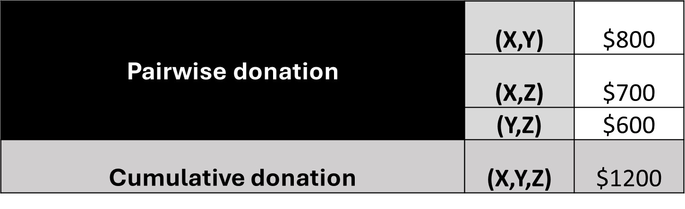
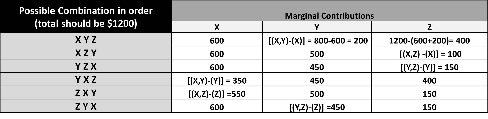
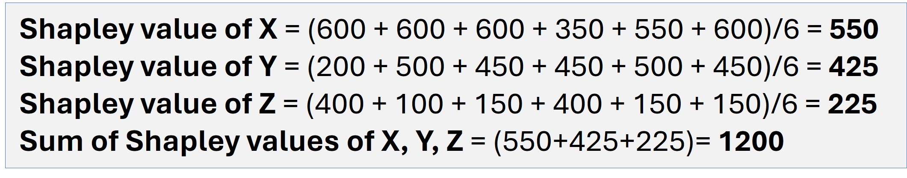
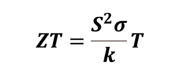
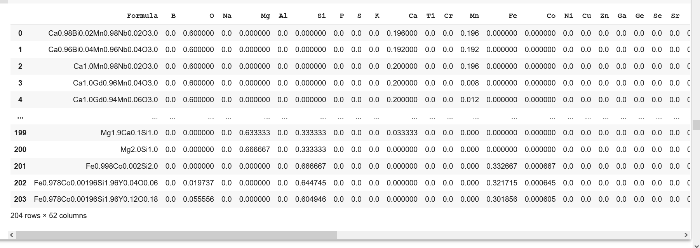
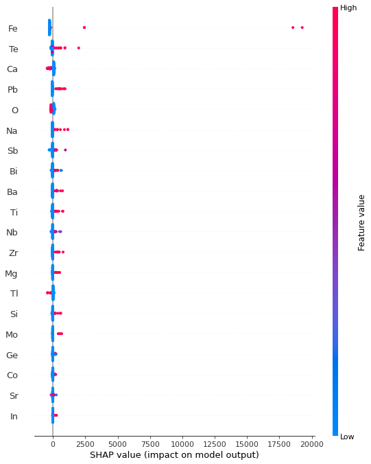
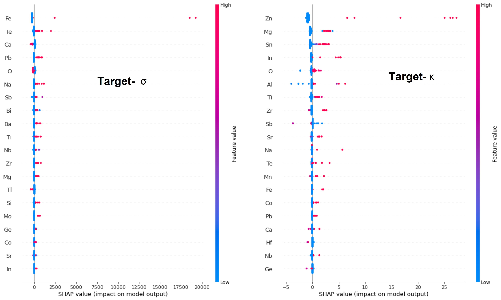
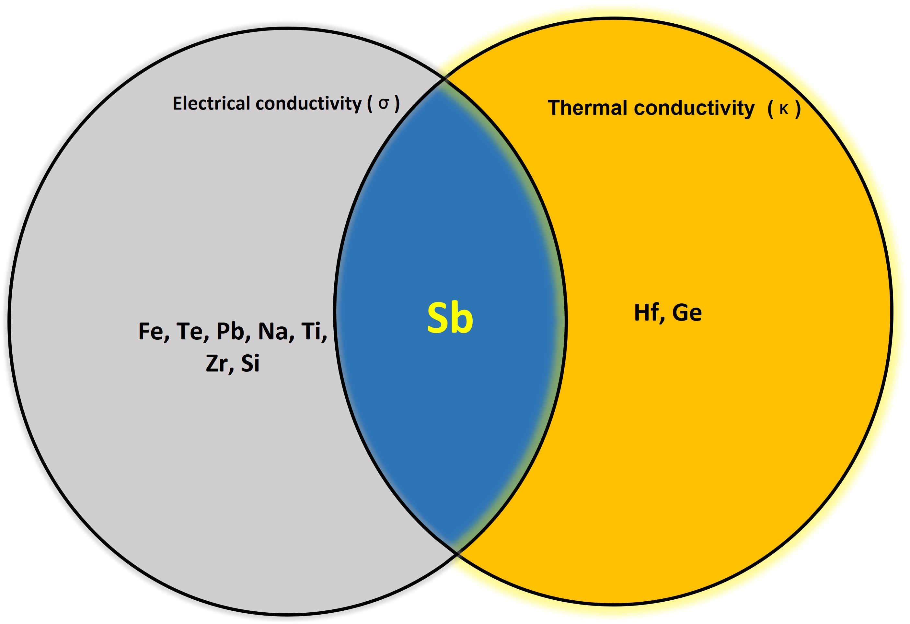
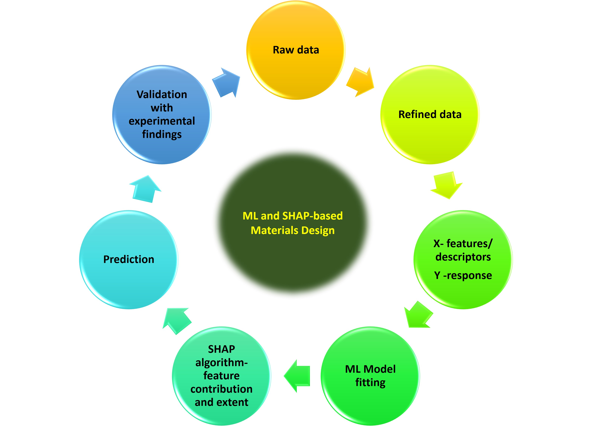

Tutorial
Shapley Value aided Recipe for Materials Design
Introduction
Materials play a significant role in developing various technologies from electronics to food. For instance, the evolution of television (TV) picture quality. Over the past few decades, stunning advancement in the TV industry has been achieved by introducing improved materials in image sensors and displays leading to enhanced image resolution from standard to ultra-high definition.
Fabricating new materials with desired functionality calls for choosing and combining elements in different proportions from the palette of 94 naturally occurring elements listed in the Periodic Table. The success of materials design depends on the confluence of the right elemental combinations, and the process variables leading to required property and performance.
In my post 'Uncovering the Potential of Materials Data using Matminer and Pymatgen', I explained data preprocessing stepwise with an emphasis on the extraction of individual elemental information and their incorporation as descriptors/ features in the original dataset. All these features may not have equal contributions to achieving the target. Hence, an appropriate machine learning (ML) model needs to be deployed which recognizes the contribution of these features. I will thus focus on the 'feature importance' aspect and show how it plays a crucial role in designing materials with improved properties. We need predictive as well as explainable ML algorithms to do this task. The 'explainability factor' is associated with the 'feature importance' of the descriptors. One such explainable AI (XAI) is based on the Shapley value concept which can be very effective in the pursuit of novel materials.
I will give you a brief overview of the concept before delving into the machine learning analysis and insights.
A short introduction to Shapley value
The Shapley value is a concept from cooperative game theory developed by L. S. Shapley. I calculate a participant’s contribution by considering every possible order in which participants can join a group. For each order, I find how much the participant adds when they join, then average these marginal contributions over the orders.
Let us take an example. Three friends, X, Y, and Z, donated $1200 to an orphanage. To calculate their Shapley values, I make the following assumptions:
A1:Had they donated individually, X, Y, and Z would have contributed $600, $450, and $150, respectively.
A2: Had they donated in pairs, then:

A3: If all three friends decide to donate a total amount of $1200, then six possible combinations in order are possible:
(X Y Z); (X Z Y); (Y Z X); (Y X Z); (Z X Y) and (Z Y X).
A4: The sum of the contribution should amount to $1200, irrespective of the order of contribution.


In machine learning, the participants are the input features. SHAP assigns each feature a contribution to the model’s prediction relative to a reference value. This explains the fitted model; it does not establish that changing a feature will cause the same change in the physical material.
The SHAP (SHapley Additive exPlanations) API, developed by Lundberg and Lee, is an explainable AI (XAI)that can be used with any machine learning (ML) system: tree and non-tree-based, and deep learning systems. For this tutorial, I use TreeExplainer to explain a random forest model. KernelExplainer is another option that can explain a general prediction function. These are two of the explainers available in SHAP.
I will now proceed to demonstrate the usefulness of SHAP value in designing a high-performance thermoelectric material from the available experimental database of several compositions. I have used Google Colab to run the entire code.
Case study: A SHAP-based approach in search of efficient thermoelectric materials
About Thermoelectrics
Thermoelectric materials have the ability to generate electricity from heat and vice versa, making them a significant component of 'green energy' initiatives. Given the interplay between heat and electricity in these materials, the parameters of thermal conductivity (κ) and electrical conductivity (σ) are closely intertwined for calculating performance metrics such as ZT or the figure of merit. Additionally, the calculation of ZT involves another crucial parameter known as the Seebeck coefficient (S), which acts as a conversion factor governing the transformation of thermal and electrical energy. The relationship of ZT with these three parameters, S, σ, and κ, at an absolute temperature, T, is as follows:

The product S²σ is coined as the power factor (PF). It is clear from the relation that a potential thermoelectric material should possess
- ✓ Low κ
- ✓ High σ
- ✓ High power factor-S2σ
Aim of the ML project
Building a machine learning model to identify possible combinations of elements, with the desirable characteristics of high σ and low κ . Here, I will showcase the correlations of various elements with σ and κ independently, and then compute their SHAP values, which will eventually assist in designing a new improved material.
Database of materials
I collected room temperature properties (σ and κ) of 204 thermoelectric compositions (shown in the formula column of the dataset) from this reference.
Stepwise Implementation of ML
The snippets below show selected steps, not a complete standalone program. Use the full notebook for the data preparation and variable definitions.
Importing relevant libraries and loading preprocessed dataset
I have imported the standard Python libraries such as NumPy, Pandas, and Matplotlib. along with the installation of materials-based Python packages such as Matminer, and Pymatgen and SHAP.
A snippet of the refined dataset, ready for training, is shown below. Please refer to my article to read about the preprocessing steps in detail.

Defining Xs (Features/ Descriptors) and y (Response/ Target)
The dataset has 49 features/ descriptors**, which are designated as X and are individual elements constituting the formulae. Note that this dataset involves two responses/targets-σ and κ designated as y_sigma and y_kappa respectively. The said targets are the determiners of the performance of thermoelectrics, as highlighted in the 'About Thermoelectrics' section. I have conducted two separate trainings with the same input parameters (X) but different targets (y_sigma and y_kappa).
It is essential to note that in real-world datasets for materials exploration, the incorporation of process variables is imperative for the purpose of optimization.
Training 1 with target-Electrical conductivity (σ)
✓ Splitting dataset into train and test batches
The preprocessed dataset is split in the ratio of 80:20 as training and test batches as seen in the code snippet below.
from sklearn.model_selection import train_test_split
X_train_s, X_test_s, y_train_s, y_test_s = train_test_split(X_sigma, y_sigma, test_size = 0.2, random_state = 0) ✓ Fitting into a machine learning algorithm
from sklearn.ensemble import RandomForestRegressor
regr_rf = RandomForestRegressor(n_estimators=100, random_state=0)
rf_s=regr_rf.fit(X_train_s, y_train_s)The training batch, X_train_s and y_train_s, is fitted with a random forest regressor algorithm.
✓ Computing SHAP values
I use TreeExplainer to examine how each feature contributes to the random forest’s prediction of electrical conductivity. Correlated features can make these contributions harder to interpret; SHAP does not automatically remove that difficulty. The result also depends on the explainer’s assumptions about feature dependence. See the TreeExplainer documentation.
✓Interpretation of SHAP values
In the SHAP summary plot, each dot represents one sample for one feature. Its horizontal position gives the SHAP value: a positive value increases the model prediction relative to its reference, while a negative value decreases it. Red indicates a higher feature value and blue a lower feature value. Color does not indicate the strength of a contribution. The rows are usually ordered by mean absolute SHAP value. See the SHAP summary-plot explanation.
import shap
explainer = shap.TreeExplainer(rf_s)
shap_values_s = explainer.shap_values(X_train_s)
shap.summary_plot(shap_values_s, X_train_s)
Understanding the role of SHAP plots in materials design
The SHAP plot, with the X-axis representing SHAP values and the Y-axis representing features, provides valuable insights into materials design. By examining the plot, we can easily identify the elements that make a positive contribution to predicted σ , which is important for thermoelectric materials. In this case, the elements iron (Fe), sodium (Na), tellurium (Te), and antimony (Sb) are identified as having a strong positive contribution to σ for some of the samples shown. I read this from the horizontal position of the points, not their color.

SHAP summary plot showing the contributions of different elements toward electrical conductivity (σ)For elemental descriptors, I also check how each feature was encoded. If it records presence or absence, red marks presence and blue marks absence. If it records a fraction or another numerical quantity, the color represents that quantity. I consider both the color and the SHAP value when reading a row.
However, a novel thermoelectric material also requires elements with low thermal conductivity (κ). This prompted the training of the same features to come up with a model which can identify elements with low κ value as the response.
Training 2 with target-Thermal conductivity (κ)
The machine is trained with a regressor algorithm on the same features (Xs) used in training 1 and κ as the target in lieu of σ. The SHAP summary plot is obtained in a similar way as in training 1. Since the final composition (material) should be a poor thermal conductor we focussed on those elements showing high negative contributions to κ. We could identify only a few elements, such as Sb, Ge (Germanium), Hf (Hafnium), and Ca (Calcium) associated with lower predicted κ in the samples shown.
Strategy for Robust Design
After generating two SHAP summary plots, we move on to the main part of this article:materials design.
We carefully analyze the two plots to select the combination of elements that can result in a promising thermoelectric composition. Keep in mind that we need combinations with a high positive SHAP value for "σ" and a high negative SHAP value for "κ" to achieve potential thermoelectric compositions.

SHAP summary plotsThese plots show that Fe, Na, Te, and Sb have large positive SHAP values for σ while Ge, Hf, Ca, and Sb possess high negative SHAP values for κ. Interestingly, Sb is the only element that concurrently exhibits high positive and high negative SHAP values forσ and κ respectively. The Venn diagram highlights Sb as a candidate associated with higher predicted σ and lower predicted κ in this analysis.

Venn diagram highlighting Sb as a candidate suggested by the two model explanationsThis finding narrowed our search for ideal combinations where Sb can be chosen as one of the constituent elements. The other element/ elements for new compositions can be judiciously selected from the range of elements contributing favorably and adversely toward σ and κ respectively.
I, then, carried out a literature survey to check the authentication of these SHAP value-based combinations with already reported experimentally valid thermoelectric compositions. I had my eureka moment when I figured out that, indeed, there are compositions reported in the literature with a mix and match of elements identified from the above SHAP summary plots.
According to my SHAP value-guided ML findings, a blend of transition metals (Fe, Hf) and p-block elements (Sb, Te, Ge) could form prospective compositions for thermoelectric applications. And such combinations are found in a class of materials (compositions), known as Heusler alloys , which are well-investigated as good thermoelectric candidates. I treat this agreement with known materials as a useful consistency check, rather than proof that a new combination will perform well. Candidate compositions still need checks of model accuracy, physical feasibility, and experimental performance. The SHAP guide to predictive and causal interpretations explains this distinction.
A schematic of the entire activity is shown with the help of a circular flowchart.

Furthermore, to inch toward ideal thermoelectric compositions, it is more appropriate to choose power factor and thermal conductivity as responses (targets) and apply the above approach.
Concluding Remarks
This article emphasizes the significance of Shapley values in weaving tapestries for new materials from a huge pool of elemental data collected over time. An amalgamation of the SHAP technique and ML model is a transparent, explainable, and productive approach to designing new materials.
The full notebook contains the analysis. If you are new to running notebooks, see my guide to writing and checking code in small steps.